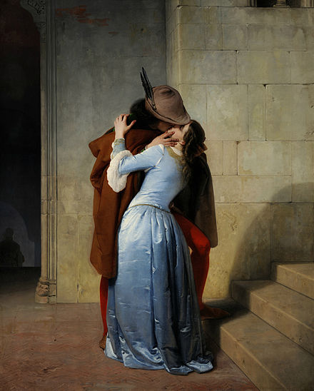

The Kiss (in German Der Kuss) is an oil-on-canvas painting with added gold leaf, silver and platinum by the Austrian Symbolist painter Gustav Klimt.[2] It was painted at some point in 1907 and 1908, during the height of what scholars call his "Golden Period".[3] It was exhibited in 1908 under the title Liebespaar (the lovers)[4] as stated in the catalogue of the exhibition. The painting depicts a couple embracing each other, their bodies entwined in elaborate beautiful robes decorated in a style influenced by the contemporary Art Nouveau style and the organic forms of the earlier Arts and Crafts movement. The painting now hangs in the Österreichische Galerie Belvedere museum in the Belvedere, Vienna, and is considered a masterpiece of Vienna Secession (local variation of Art Nouveau) and Klimt's most popular work.[5].
Background
Love, intimacy, and sexuality are common themes found in Gustav Klimt's works.
The Stoclet Frieze and the Beethoven Frieze are such examples of Klimt's focus on romantic
intimacy. Both works are precursors to The Kiss and feature the recurring motif of an
embracing couple.
It is thought that Klimt and his companion Emilie Flöge modeled
for the work,[6] but there is no evidence or record to prove this. Others suggest the
female was the model known as 'Red Hilda'; she bears strong resemblance to the model in
his Woman with feather boa, Goldfish and Danaë.
Description
Gustav Klimt depicts the couple locked in an intimate embrace against a gold, flat background. The two figures are situated at the edge of a patch of flowery meadow that ends under the woman's exposed feet. The man wears a robe printed with geometric patterns and subtle swirls. He wears a crown of vines while the woman wears a crown of flowers. She is shown in a flowing dress with floral patterns. The man's face is not shown to the audience and instead, his face is bent downward to press a kiss to the woman's cheek, and his hands are cradling the woman's face. Her eyes are closed, with one arm wrapped around the man's neck, the other resting gently on his hand, and her face is upturned to receive the man's kiss.
 The Kiss by artist Francesco Hayez in 1859. Photo is public domain.The patterns in the painting suggests the style of Art Nouveau and the organic
forms of the Arts and Crafts movement. At the same time, the background evokes the
conflict between two- and three-dimensionality intrinsic to the work of Degas and
other modernists. Paintings such as The Kiss are visual manifestations of fin-de-siecle
spirit because they capture a decadence conveyed by opulent and sensuous images.
The use of gold leaf recalls medieval gold-ground paintings, illuminated manuscripts,
earlier mosaics, and the spiral patterns in the clothes recall Bronze Age art and
the decorative tendrils seen in Western art since before classical times.
The man's head ends very close to the top of the canvas, a departure from
traditional Western canons that reflects the influence of Japanese prints,
as does the painting's simplified composition.
Klimt's father was a traveling artisan specializing in gold engravings, but
Klimt's use of gold leaf in paintings was inspired by a trip he made to Italy in 1903.
When he visited Ravenna he saw the Byzantine mosaics in the Church of San Vitale.
For Klimt, the flatness of the mosaics and their lack of perspective and depth only
enhanced their golden brilliance, and he started to make unprecedented use of gold
and silver leaf in his own work.
It has also been argued that in this picture Klimt represented the moment Apollo kisses
Daphne, following the Metamorphoses of Ovid narrative.
Art historians have also suggested that Klimt depicts the tale of Orpheus and Eurydice.
More specifically, Klimt seems to be showing the exact moment when Orpheus turns around
to caress Eurydice and loses his love forever. As shown in this painting, the woman
being held is slightly translucent, indicating a fading away or disappearance—as told
in the story.
Reception
Klimt painted The Kiss soon after his three-part Vienna Ceiling series, which created a
scandal and were criticized as both "pornographic" and evidence of "perverted excess".
The works had recast the artist as an enfant terrible for his anti-authoritarian and
anti-popularist views on art. He wrote, "If you can not please everyone with your
deeds and your art, please a few".
The Kiss was exhibited in 1908 in Vienna in the Kunstschau — the building created
in collaboration by Josef Hoffmann, Gustav Klimt, Otto Prutscher, Koloman Moser
and many others, to coincide with the celebrations in Vienna for the sixtieth
anniversary of Emperor Francis Joseph I's reign from June 1 to November 16 1908.
The Kiss, however, was enthusiastically received, and was purchased, still
unfinished, by the Austrian government when it was put on public exhibition.
References to The Kiss
In "The Freshman", the first episode of the fourth season of Buffy the Vampire Slayer,
several vampires display posters of The Kiss that they have stolen from students they
killed, remarking on how common it is as a dorm room poster.
In February 2013 Syrian artist Tammam Azzam superimposed an image of the painting
onto a bombed building in an unidentified part of Syria, in a work called Freedom Graffiti,
to call attention to the plight of war in his country.
In 2012, 20th Century Fox released the action/romance movie This Means War
starring Reese Witherspoon, Tom Hardy, and Chris Pine. The film features a scene where
Pine and Witherspoon's characters tour a private Klimt collection, with The Kiss being
the focal piece.
Altered Carbon, an American dystopian science fiction cyberpunk web television series,
also makes reference to the painting which the main characters find leaning against the wall
of an apartment in the far future.
The painting is also featured in the 1980 film Bad Timing directed by Nicolas Roeg
and starring Art Garfunkel and Theresa Russell.
In the 2004 anime Elfen Lied, the OP Lilium features many allusions to this painting
and others of similar nature.
In the 2010 independent film Tiny Furniture, directed by Lena Dunham, there is a scene
in which the character Frankie (played by Merritt Wever) comments on freshmen moving into her
college dormitory, and she pokes fun at the ubiquity of The Kiss, exclaiming "...all the
collapsable hampers and mini-fridges and posters of Gustav Klimt's The Kiss."
In The Adventures of Young Indiana Jones episode Perils of Cupid, Indiana sees the
painting behind a glass display on the streets of Vienna.
The clothing company, Sock It To Me (clothing company), sells a pair of socks
titled, "The Kiss Knee High Socks," inspired by the painting of the same name.